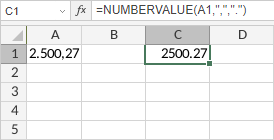

NUMBERVALUE funkcija
NUMBERVALUE funkcija je jedna od funkcija za tekst i podatke. Koristi se za konvertovanje teksta u broj, nezavisno od lokalnih postavki. Ako konvertovani tekst nije broj, funkcija će vratiti grešku #VALUE!.
Sintaksa
NUMBERVALUE(text, [decimal_separator], [group_separator])
NUMBERVALUE funkcija ima sledeće argumente:
| Argument | Opis |
|---|---|
| text | Tekstualni podatak koji predstavlja broj. |
| decimal_separator | Karakter koji se koristi za razdvajanje cele i decimalne vrednosti. Ovo je opcion argument. Ako se izostavi, koristi se trenutna lokalna postavka. |
| group_separator | Karakter koji se koristi za razdvajanje grupa brojeva, kao što su hiljade od stotina i milioni od hiljada. Ovo je opcion argument. Ako se izostavi, koristi se trenutna lokalna postavka. |
Napomene
Kako primeniti NUMBERVALUE funkciju.
Primeri
Na slici ispod prikazan je rezultat koji vraća NUMBERVALUE funkcija.
